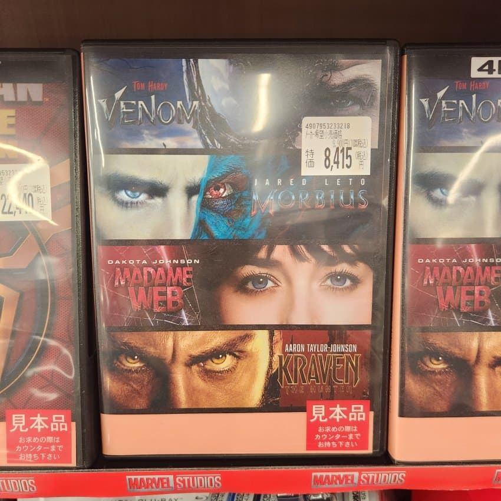

근데 누가 이딴걸 80000원이나 주고 사요...

근데 누가 이딴걸 80000원이나 주고 사요...
저기서 베놈1편만 보면됨 나머진 핵폐기물질이나 다름없음
똥만 모아놨네 ㅋㅋ
와 쓰레기들만 들어있네
베놈은 그래도 오락영화로 봐줄만하지않았냐
우주강아지라고 좋아하던 사람들도 있어서 짤로도 많이 봣는데
나머지는 짤로도 못봄ㅋㅋㅋㅋ
맛없는거만 모아놓은 종합선물셋트 과자같은거네 ㅋ
베놈만 평작
그 이하로는 배우 커리어까지 영향갈정도의 쓰레기라고 하더라
쓰레기들 흙으로 대충 덮어놓은 꼴이네 ㅋㅋ
마담 웹 빼고 다 봤는데 걍 2시간 이내에 다 집어넣을려고 하니깐 서사가 다 개박살남 ㅋㅋ
베놈 : 나름 괜찮게 잘 만들었음. 꽤 재밌게 봄.
뫼비우스 : 그냥 나름 나쁘지 않은 평작
마담웹 : 내가 보다가 15분만에 끈 최초의 슈퍼히어로믈
크레이븐 : 감히 아직도 보지 못하고 있음.
소니 이 새끼들은 영화만들줄 모르나
베놈 빼면 다 망작이네
난 크레이븐 생각보다 괜찮게 봤는데.. 남주 간지가 너무 멋져서 남주빨로 봄
왜 게이되는지 살짝 느낌
옆에 22400엔은 뭔데..
베놈은 나름 상현 아닌가 ㅋㅋ